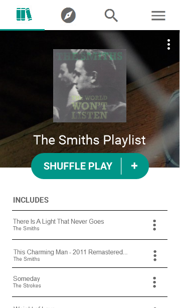
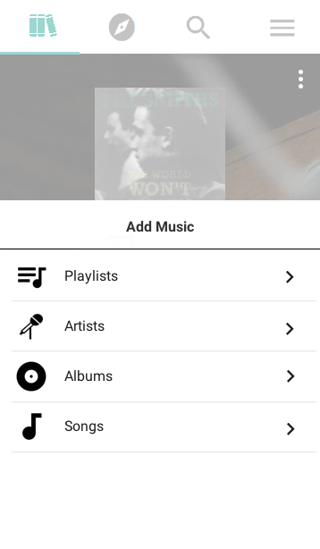

- Process & Iteration -
We started this project by interviewing people who regularly used playlists, and constructed user scenarios from those interviews. We then had our interviewees demonstrate certain scenarios on the music application of their choice. Our next step was to pick our a few commonly done or important scenarios and compare our compiled step-by-step users scenarios across platforms. We then performed a competitive analysis on how different platforms organized how users could find songs. After we did all the research, we started prototyping our applications. We took two of our user scenarios— one involving creating playlists, and another involving mangaging playlists— and started creating prototypes based around the scenarios.
Interviews
We interviewed several people across music platforms who use playlists as part of their music listening experience. The interviews allowed us to understand what people how people generally listen to their playlists and their process for making and managing playlists. We found out about how often they do certain things, if at all. Additionally, we asked them about pain points and things they wish they could change in their playlist experience. Below are highlights of the interviews that I did.
> Listening to Music
We asked users how they listened to music— individual tracks, albums, playlist.
- People used a long list or streams of songs to listen to music without interrupts. On more traditional forms of music apps (v. Soundcloud which has a music feed that is more similar to blog posts on Tumblr) people used either playlists that they created themselves or playlists that were made by other people.
- Most people used playlists while they were doing some kind of activity, such as showering or doing homework. They might not necessarily make specific playlists for that activity though.
> Playlist Making
Once a playlist is created, users don't typically perform any destructive actions on their playlists (i.e. delete tracks, delete playlists) or rename the playlist. Although, they may add tracks if they stumble upon a suitable track, or merge playlists in order to create new playlist.
> Pain Points
- There was a lack of bulk options in some music apps. People couldn't add, delete, or reorder tracks quickly.
- Mobile applications tend to be too minimalistic, and as a result, controls aren't as intuitive. Soundcloud has a control where the user has to tap the screen while the track is playing in order to pause it or swipe left or right in order to move to the next or previous song, but there are no indications of these controls on the screen. While Apple uses titles as a method for switching between categories such as genres, albums, artists, etc. But, most users are not used to this, so they don't think to tap the title. This function is usually seen in things you can edit, such as on Google Documents, not for changing categories.
Comparative Scenarios
We asked our interviewees to walk us through how they performed some of tasks they did in their prospective music apps. By doing so, we could see where the user was having issues. We compiled a list of these user scenarios we gather from our interviews, and picked out five of those that were the most common and/or important scenarios. For each of these scenarios, we compared the steps taken in each of these scenarios across music platforms.
- We discovered that in Spotify that when users tried to add multiple songs to a playlist, the feature was not supported. Instead, users had to add songs one-by-one. Whereas in Apple Music and KKBox users were able to add multiple songs through a checklist, and a "Select All" function. Upon further research, we discovered that this has actually been a requested feature for Spotify. It's a feature that would creately simplify creating and managing playlists.
- When Spotify users wanted to do something other than browsing new music (home page) they would enter on the Browse page, and have to hit the hamburger menu to get anywhere else. Apple Music and KKBox both started out in the user's library, which made it easier for users to access their own music. While our app focuses on playlists, users ultimately create these playlists, to listen to them. We prioritized listening to music over browsing music, but easy browsing is still readily accessible with one click due to our top navigation.
- Spotify and KKbox display the search results by similar categories i.e. Top Results, Songs, Artists, etc. We thought this was very useful to the user who may be searching for something that appears in many different categories when they only want the one.
- While interviewing people and comparing music applications, we discovered that there were two main ways that people created playlists. The first people to create a playlist from the (...) menu on a song in their search results, or creating a playlist and then adding songs from the playlist itself when this feature was supported. We decided to implement both since users used either of these methods. In music applications that did not support this functionality, we found users often searched for songs that they already had in their library after creating a blank playlist, so we wanted to make the route more direct and easier for users to be able to create playlists from existing music in their library.  
Competitive Analysis
We created tables of the content, how that content was displayed, and navigation labels we discovered on other music apps.
- Albums and genres were generally represented as square blocks in Spotify and KKBox, while artists were displayed as a circle. In Apple Music, there was less distinguishability between an artist versus an album. We liked that the user could instantly tell what was which without having to read anything, so we used the same standard followed by Spotify and KKBox.
- The way that the content was displayed made it easier for the user to distinguish between an album, artist, song, etc. In Spotify, song tracks were always displayed as horizontal blocks that took up the width of the page. This was the case for albums and artists in the user's library on Spotify as well, I think, due to the sheer amount of music that the user can have. But while browsing, the artists and albums were displayed as blocks that easily distinguishable due to the previous point made. While in Apple Music and KKBox, listings of any type (artist, album, song, etc.) tended to be the same, of the horizontal block type. This takes more effort on the user's end, so decided on Spotify's way of distinguishing between artists, albums, etc.

First Draft
We got together and went through the pages that we needed came up with a rough design for our application based on our interviews, comparative scenarios, and competitive analysis.
- Final Design -
This is the prototype that we made using a combination of Invision, Axure, and Photoshop. Our application tries to allow the user to efficiently create and manage playlists, while still allowing them easily listen to and browse for music. We combined the content offered by Spotify for browsing, with the functionality that music applications like Apple Music and KKBox offer for the easy creation of playlists, and the clean, simplistic design of Soundcloud.
- Lessons -
The main lesson that I learned from this design experience was about tradeoffs, and how hard the decision can be, especially in terms of information architecture. There's a balance between maintaining minimalistic design while still making it easy for the user to find what they want. It's easy to get lost in the design process. I got a little too fixated a couple of times and ended up creating more screens that what was needed, but I think staying focus on the problem at hand is very important. A lot our design decisions can be made by focusing on what the user is trying to accomplish with this app, and how often they are likely to do it.
Another hitch in the process was that, even though we went through all the screens that we needed and made many decisions while we were roughly sketching our the screens together, there was many aspects that we did not consider or fully think through until we were actually creating the screens. I found myself often questioning the decisions that we made before. For example, when were sketching out the Artist page, we decided on an easy option for people to add popular songs from the artist to their playlist, next to the "Shuffle Play" button below the Artist since our app is primarily focused on users listening and managing playlists. But, I noticed that the button looked more like a global function on the list rather than specifically for the artist's popular hits. So, the lesson here is, even though you think you have everything planned out, until you actually go through your product, there might be many considerations that you did not take in account in your design.